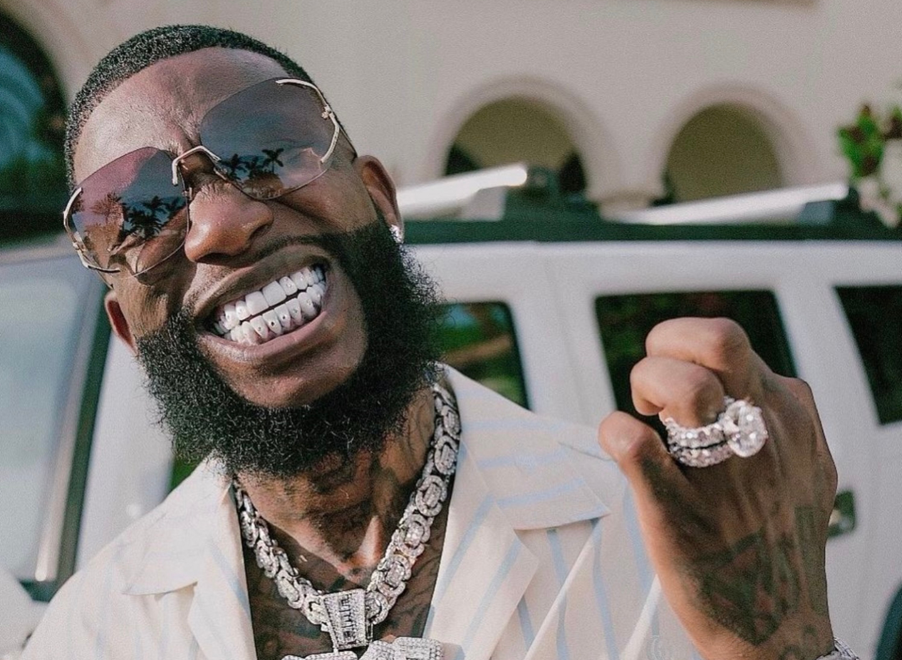

Gucci Mane
Atlanta Rapper
Gucci Mane
Radric Delantic Davis, mieux connu sous le nom de scène Gucci Mane, est un rappeur et auteur-compositeur influent d'Atlanta, en Géorgie. Il est connu pour sa voix distinctive, son jeu de mots astucieux et ses performances énergiques, ainsi que pour son esprit d'entreprise et son sens des affaires. Gucci Mane est né le 12 février 1980 à Birmingham, en Alabama, et a grandi à Atlanta. Il a eu une enfance difficile, grandissant dans un quartier difficile et se livrant à des petits délits dès son plus jeune âge. Il a abandonné l'école secondaire en 10e année et a commencé à poursuivre une carrière dans la musique, inspiré par le succès de rappeurs d'Atlanta comme Outkast, Goodie Mob et T.I.
Biographie
Au cours des années suivantes, Gucci Mane a sorti plusieurs autres albums et mixtapes, notamment "Hard to Kill", "Trap-A-Thon" et "Back to the Trap House". Il a collaboré avec un large éventail d'artistes, de Lil Wayne à Mariah Carey, et est devenu connu pour sa production prolifique et ses performances pleines d'énergie. Cependant, il a également connu des problèmes personnels, notamment des problèmes juridiques et de toxicomanie , ce qui a entraîné plusieurs séjours en prison et en cure de désintoxication. En 2009, Gucci Mane a sorti ce que beaucoup considèrent comme son meilleur album, "The State vs. Radric Davis". L'album comprenait certains de ses morceaux les plus populaires, notamment "Wasted", "Spotlight" et "Lemonade", et a reçu des critiques élogieuses pour son mélange d'accroches accrocheuses et de rythmes percutants. L'album a également marqué un tournant dans la vie personnelle de Gucci Mane, car il est devenu sobre et a commencé à se concentrer davantage sur sa musique et ses projets commerciaux.
Succès
Depuis lors, Gucci Mane a continué à sortir de la musique à un rythme effréné et est devenu une figure respectée dans la communauté hip-hop. Il a collaboré avec tout le monde, de Drake à Bruno Mars, et son influence peut être entendue dans le travail de nombreux rappeurs plus jeunes. Il est également devenu un entrepreneur, lançant son propre label, 1017 Records, ainsi que plusieurs autres projets commerciaux, notamment une ligne de vêtements, un livre et une émission de téléréalité.
Tout au long de sa carrière, Gucci Mane a fait face à de nombreux défis, à la fois personnels
et professionnels, mais il est toujours resté attaché à son art et à ses fans. Il est devenu
un symbole et de persévérance face à l'adversité, et sa musique continue d'inspirer et de divertir
les gens du monde entier. Que vous soyez un fan inconditionnel ou un auditeur occasionnel, on ne peut
nier l'impact que Gucci Mane a eu sur le monde du hip-hop et au-delà.
Mais Guwop est aussi connu pour ses citations iconiques, comme lors d'une interview chez le magazine Complexe :
"If a man does not have sauce, then he is lost. But the same man can get lost in the sauce."
Discographie
Mixtape
- 2006 : Chicken Talk
- 2007 : No Pad, No Pencil
- 2009 : The Burrrprint: 3D (The Movie: Part 3)
- 2010 : Mr. Zone 6
- 2012 : Trap Back
- 2012 : Trap God
- 2012 : I'm Up
- 2012 : Trap God 2
- 2013 : The Diary Of A Trap God
- 2013 : World War 3: Molly (Produit par Metro Boomin)
- 2014 : Trap God III
- 2014 : Brick Factory, Vol.1
- 2015 : Trap House 5 (The Final Chapter)
- 2015 : King Gucci
- 2015 : East Atlanta Santa 2
- 2016 : Woptober
- 2017 : DropTopWop (produit Metro Boomin)
- 2017 : El Gato : The Human Glacier
Albums
- 2005 : Trap House
- 2006 : Hard to Kill
- 2007 : Trap-a-thon
- 2009 : Murder was the case
- 2007 : Back to the Trap House
- 2009 : The State vs. Radric Davis
- 2010 : The Appeal: Georgia's Most Wanted
- 2011 : The Return of Mr. Zone 6
- 2011 : Ferrari Boyz (avec Waka Flocka Flame)
- 2011 : BAYTL (avec V-Nasty)
- 2011 : BAYTL (avec V-Nasty)
- 2013 : Trap House III
- 2013 : The State vs. Radric Davis II: The CBS
- 2014 : Trap House IIII
- 2014 : The OddFather
- 2014 : East Atlanta Santa
- 2015 : 1017 Mafia : Incarcereted
- 2015 : Breakfast
- 2015 : Lunch
- 2015 : Dinner
- 2016 : Everybody Looking
- 2016 : WopTober
- 2016 : The Return of East Atlanta Santa
- 2017 : Mr. Davis
- 2018 : Evil Genius
- 2019 : Delusions of Grandeur
- 2019 : Woptober II
- 2019 : East Atlanta Santa 3
- 2021 : Ice Daddy
EPs
- 2009 : Wasted: The Prequel
- 2015 : Views From Zone 6
- 2015 : Dessert
- 2016 : GuccTiggy (avec Zaytoven) Ferrari Boyz
- 2016 : Free Bricks 2 (Zone 6 Edition) (avec Future)
- 2016 : 10. 17 vs. The World (avec Lil Uzi Vert)
- 2017 : 3 for Free
Filmographie
- 2012 : Spring Breakers de Harmony Korine : Big Arch